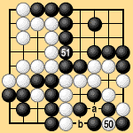
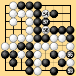
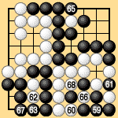
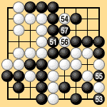
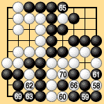
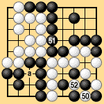

| 6.3 Reinforcement Questions (2) |
|---|
| Dia. 6-6-1 shows a position with a multi-stage ko. After Black 51, the question is whether White has to reinforce at 'a' and 'b.' Depending on the number of ko threats, Black might be able to win the ko and capture White. The Nihon Kiin's Laws are unclear about this position, because they do not completely define a ko threat.* |
|  |
| Dia. 6-6-1 (50-51) |
|---|
| To start with, let's play the game out under area rules III. White 52 passes, then play continues as in Dias. 6-6-2 and 6-6-3, ending with two more passes at Black 69 and White 70. Black has 39 points and White has 42, but because of the half-point rule White wins by four points. You may check that this is the same as if White does not reinforce at 'a' and 'b' after Black 51 in Dia. 6-6-1. |
|  |  | ||
|
|
| Under territory rules I the game ends as shown in Dias. 6-6-4 and 6-6-5. Black 67 and White 68 pass, establishing the preliminary end. After Black 69 and White 70 both sides pass again, ending the game. White wins by four points, which agrees with area rules III. |
|  |  | ||
|
|
| Dia. 6-7 is like Dia. 6-6 without a white stone at 'a.' In this case, because of the final ko-threat relationships White has to capture the ko instead of passing with 52. Under area rules III the half-point rule does not apply and White wins by three points. White also wins by three points under territory rules I because he has to make the reinforcing move at 52. |
|  |
| Dia. 6-7 |
|---|
|